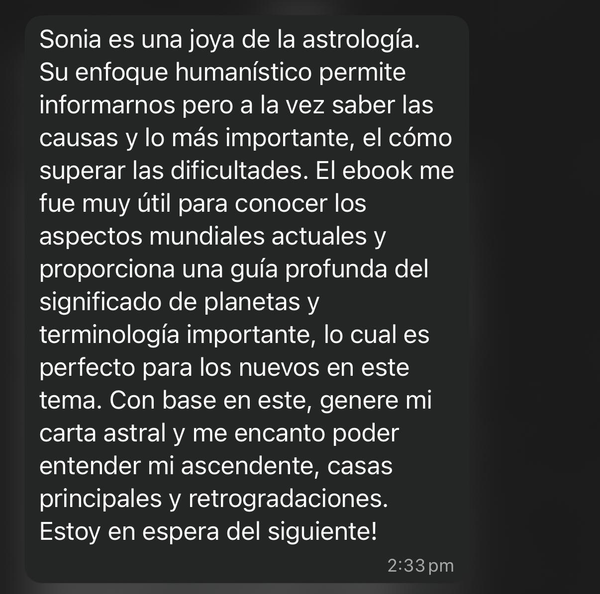
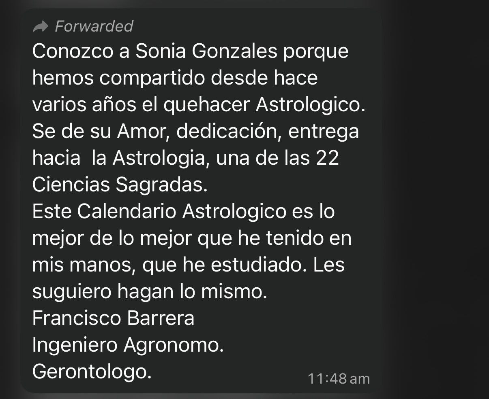
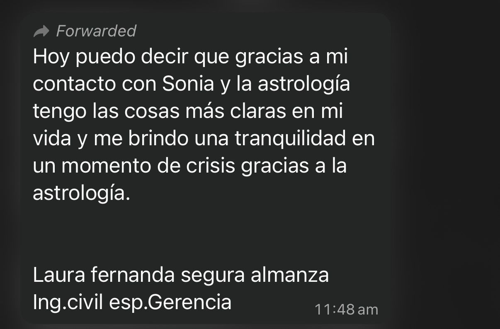
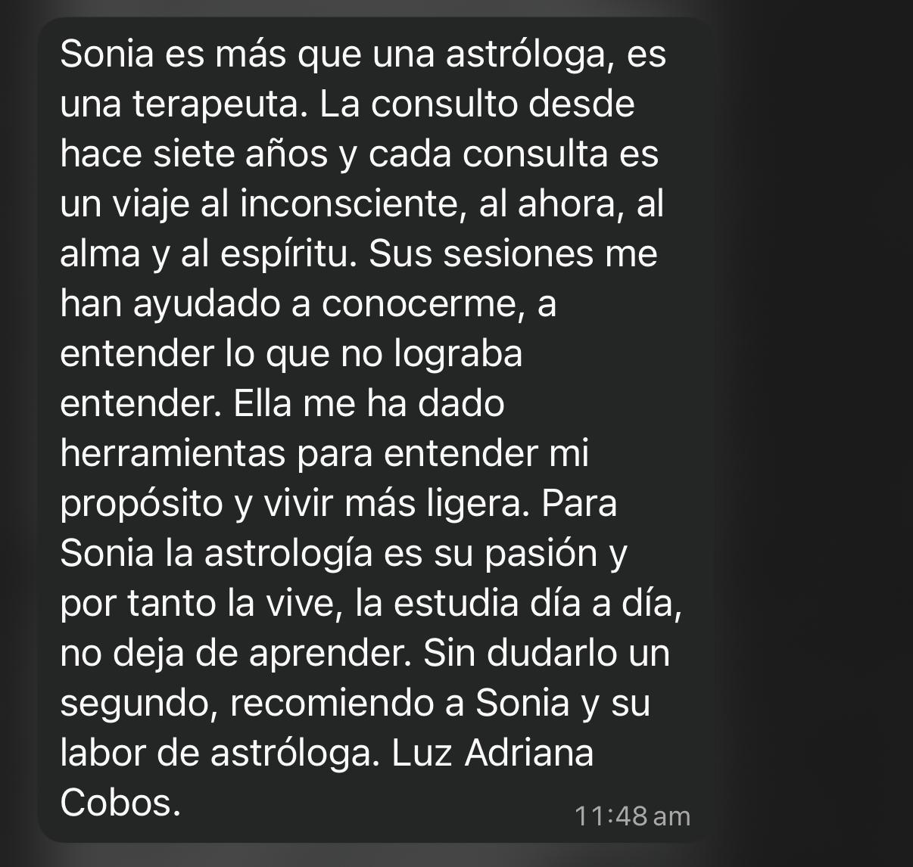
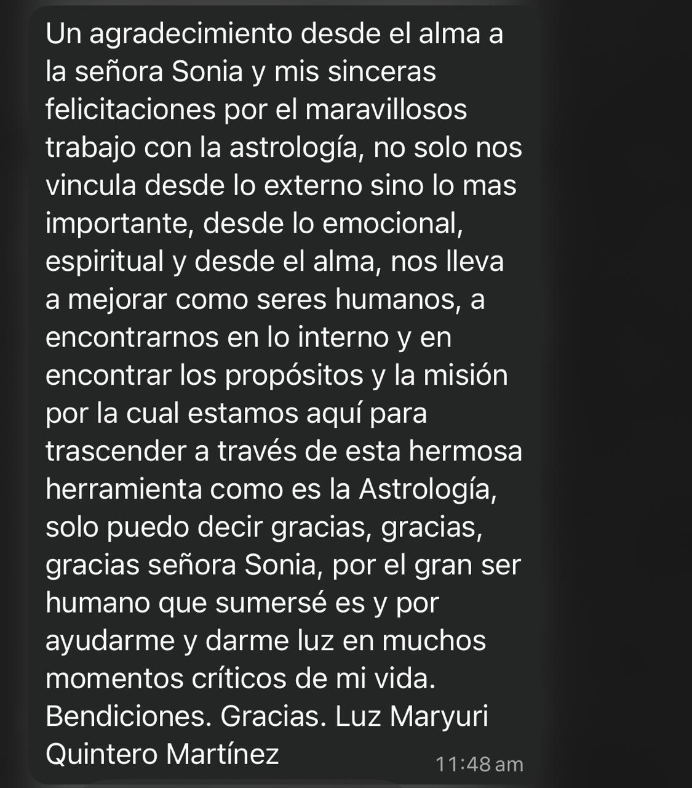
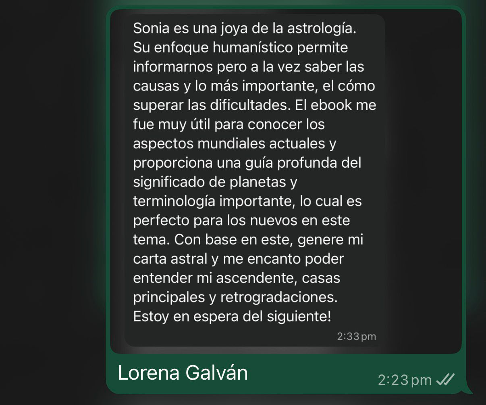

Descarga el calendario tras la compra.
Imprime el calendario si lo deseas y sumérgete en sus páginas.
Todo está explicado de manera sencilla para acompañar tu proceso personal durante todo el año.
Si el tiempo tiene un ritmo y tu vida también…
¿qué pasaría si supieras cuándo cada experiencia quiere ser vivida?
Precio unitario / por
🎁 OFERTA 40% OFF — Oferta por tiempo limitado
✓ Acceso inmediato después del pago
✓ Descarga ilimitada
✓ Garantía de satisfacción de 7 días
El Calendario Astrológico 2026 es una guía para leer el tiempo y comprender sus ritmos y aplicarlos a la vida diaria.
Te acompaña a observar los ciclos del cielo y cómo se reflejan en tu propia carta natal, para vivir el año con mayor claridad, sentido y conciencia.
Todas las Lunas Nuevas y Llenas para vivir en sintonia con los ciclos usando el calendario lunar
Fechas exactas y su importancia para vivir de acuerdo a la energia del cosmos
Importancia de los eclipses y nodos lunares en la aplicacion de tu carta natal
Conjuncion Saturno y Neptuno que se da aproximadamente cada 36 años y como afecta la energia colectiva
Todo explicado de manera sencilla para acompañar tu proceso personal
Acceso inmediato. Puedes imprimirlo o consultarlo desde cualquier dispositivo
Descarga el calendario tras la compra.
Imprime el calendario si lo deseas y sumérgete en sus páginas.
Todo está explicado de manera sencilla para acompañar tu proceso personal durante todo el año.
"Perfecto para los nuevos en este tema. Con base en este calendario, generé mi carta astral y me encantó poder entender mi ascendente, casas principales y retrogradaciones."
"Me encantó. Está lleno de sabiduría, tan claro y tan mágico ✨. Lo uso todos los días para planificar mis actividades importantes."
"Encantada con toda la información! Es clara, directa, bien escrita y bien organizada. Gracias por esta herramienta tan valiosa 🌟🔮💕"
"Lo recibí 2 minutos después del pago. Empecé a leerlo ayer y estoy fascinada. El precio es muy bueno para todo lo que incluye. ¡100% recomendado!"
Astróloga · Desarrollo humano consciente
Formada académicamente en química y con años de estudio en astrología y desarrollo humano.
Su enfoque utiliza la astrología como una herramienta consciente de lectura del tiempo, claridad interior y acompañamiento de procesos personales.
Lo que dicen quienes han trabajado con ella






No necesitas creer en astrología.
Solo necesitas observar cómo el tiempo y los ciclos influyen en tu experiencia y en la evolucion de la consciencia.
Este calendario no te dice qué hacer.
Te ayuda a entender cuándo, cómo y desde dónde elegir.
Es una guía para leer el tiempo, escucharte mejor y acompañar tu proceso con sentido, ritmo y profundidad.
Porque este calendario no es solo información suelta, es una guía ordenada, consciente, ordenada con modulos que te llevan a una comprensión clara de los cambios y ritmos del cielo con material de apoyo para aplicarlos a tu carta astral.
Mientras que en internet encuentras fragmentos, teorías y eventos aislados, aquí tienes un camino claro, pensado para acompañarte mes a mes durante todo el año.
Es un producto digital (PDF) que podrás leer desde tu celular, tablet o computadora. También puedes imprimirlo y tenerlo contigo cuando necesites consultarlo.
Recibes el acceso inmediatamente después de completar tu pago. El calendario se entrega directamente como descarga digital. No hay que esperar correos ni envíos. Una vez que pagas, tienes acceso instantáneo al PDF para descargarlo cuantas veces necesites.
¡No te preocupes! 🕯️✨
No necesitas tener una impresora para comenzar a usar tu Calendario Astrológico.
📱 Puedes verlo desde tu celular, tablet o computadora sin ningún problema. Muchas personas lo utilizan así: abren el PDF, leen los ciclos y aplican la información a su vida diaria.
✨ Lo más importante es que comiences tu camino consciente… el resto se acomoda.